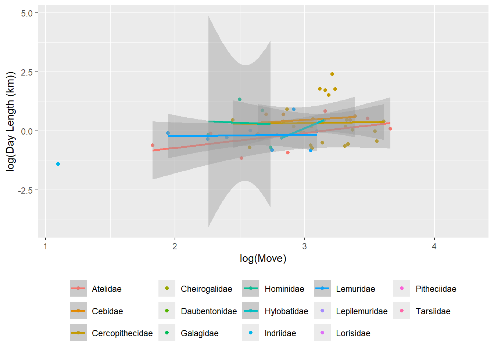
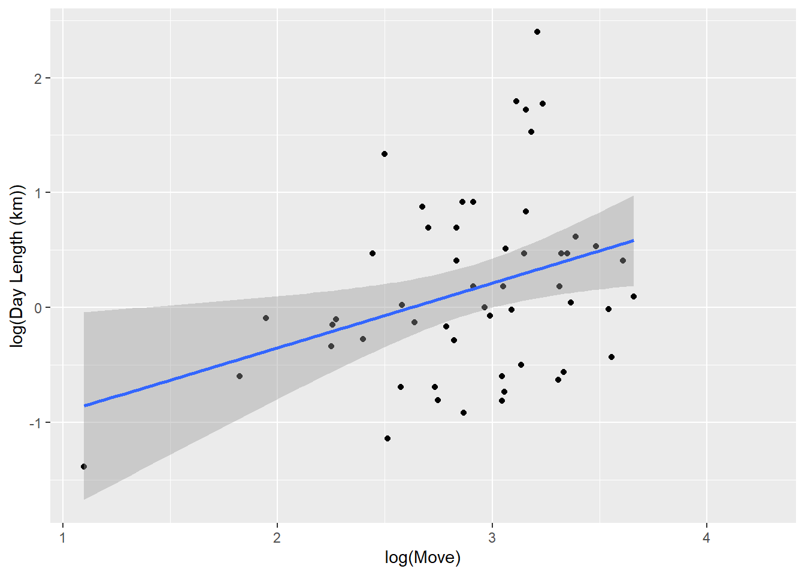
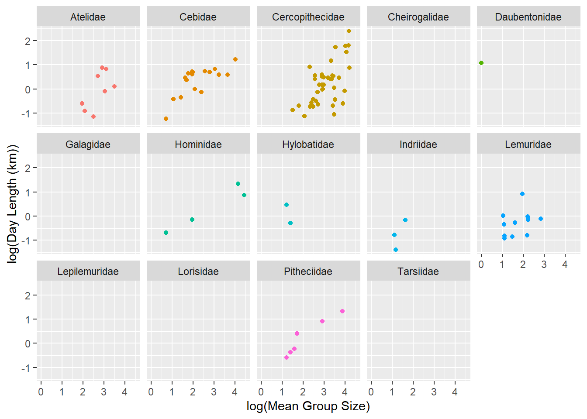

For this exercise we need three libraries to be loaded
library(readr) #reads in fileslibrary(ggplot2) #for plotslibrary(dplyr) #for data manipulation
Attaching package: 'dplyr'
The following objects are masked from 'package:stats':
filter, lag
The following objects are masked from 'package:base':
intersect, setdiff, setequal, union
library(tidyr)
Load the “data-wrangling.csv” dataset from the URL in the excercise 3 page as a tabular data structure named d and look at the variables it contains, which are a subset of those in the Kamilar and Cooper dataset on primate ecology, behavior, and life history that we have used previously.
Store the URL as a variable f
f <-"https://raw.githubusercontent.com/difiore/ada-datasets/main/data-wrangling.csv"
Load the data (f) as a variable d
d <-read_csv(f, col_names =TRUE)
Rows: 213 Columns: 23
── Column specification ────────────────────────────────────────────────────────
Delimiter: ","
chr (6): Scientific_Name, Family, Genus, Species, Leaves, Fauna
dbl (17): Brain_Size_Species_Mean, Body_mass_male_mean, Body_mass_female_mea...
ℹ Use `spec()` to retrieve the full column specification for this data.
ℹ Specify the column types or set `show_col_types = FALSE` to quiet this message.
Exercise - Creating Variables and Columns in Data
Create a new variable named BSD (body size dimorphism) which is the ratio of average male to female body mass. \[
Body Size Dimophism (BSD) = Average Male Body Mass/Average Female Body Mass
\]
Create a new variable named sex_ratio, which is the ratio of the number of adult females to adult males in a typical group. \[
Sex Ratio = adult females/adult males
\]
d$sex_ratio <- d$AdultFemale/d$AdultMales
Create a new variable named DI (for “defensibility index”), which is the ratio of day range length to the diameter of the home range.
\[
Diameter of home range = 2 * sqrt(HomeRange/pi)
\]
d$diameter <- (2*sqrt(d$HomeRange_km2/pi))
\[
Defensibility Index (DI) = day range length/diameter of home range
\]
d$DI <- d$DayLength_km/d$diameter
Exercise - Plotting Data
Plot the relationship between day range length (y axis) and time spent moving (x axis), for these primate species overall and by family (i.e., a different plot for each family, e.g., by using faceting: + facet_wrap()). Do species that spend more time moving travel farther overall? How about within any particular primate family? Should you transform either of these variables?
Yes, there is a positive correlation between movement and the range of length traveled. It seems particulary stronger between some like Atelidae, Cebidae, and Cercopithecidae. However other families show no correlation or a very weak one. I feel like the log transformation was not that helpful. i noticed that some families had values for Day Length but not for move, I am wondering if this has impact on what we are saying.
Overall Relationship between day range length and time spent moving
p <-ggplot(data = d, aes(x =log(Move), y =log(DayLength_km), color =factor(Family))) #plot with points colored by family#modify axis labelsp <- p +xlab("log(Move)") +ylab("log(Day Length (km))")#create scatterplotp <- p +geom_point(na.rm =TRUE)#modify legendp <- p +theme(legend.position ="bottom", legend.title =element_blank())#linear regression by family, noted out not really usefulp <- p +geom_smooth(method ="lm", fullrange =FALSE, na.rm =TRUE)# and, finally, we plot the objectp
`geom_smooth()` using formula = 'y ~ x'
Warning in qt((1 - level)/2, df): NaNs produced
Warning in max(ids, na.rm = TRUE): no non-missing arguments to max; returning
-Inf

p <-ggplot(data = d, aes(x =log(Move), y =log(DayLength_km))) #plot with points colored by family#modify axis labelsp <- p +xlab("log(Move)") +ylab("log(Day Length (km))")#create scatterplotp <- p +geom_point(na.rm =TRUE)#modify legendp <- p +theme(legend.position ="bottom", legend.title =element_blank())#linear regression by family, noted out not really usefulp <- p +geom_smooth(method ="lm", fullrange =FALSE, na.rm =TRUE)# and, finally, we plot the objectp
`geom_smooth()` using formula = 'y ~ x'

Family Relationship between day range length and time spent moving
p <- p +facet_wrap(~Family, ncol =5)p <- p +theme(legend.position ="none")p
`geom_smooth()` using formula = 'y ~ x'
Warning in qt((1 - level)/2, df): NaNs produced
Warning in max(ids, na.rm = TRUE): no non-missing arguments to max; returning
-Inf
Plot the relationship between day range length (y axis) and group size (x axis), overall and by family. Do species that live in larger groups travel farther overall? How about within any particular primate family? Should you transform either of these variable?
Yes there is a positive relationship and species that live in larger groups travel farther overall. It seems as though Cebidae, Cercopithecidae, and Pitheciidae have a stronger correlation. I did do a log transformation as it was hard to see.
Overall Relationship between day range length and group size
p <-ggplot(data = d, aes(x =log(MeanGroupSize), y =log(DayLength_km), color =factor(Family))) #plot with points colored by family#modify axis labelsp <- p +xlab("log(Mean Group Size)") +ylab("log(Day Length (km))")#create scatterplotp <- p +geom_point(na.rm =TRUE)#modify legendp <- p +theme(legend.position ="bottom", legend.title =element_blank())#linear regression by family, noted out not really useful#p <- p + geom_smooth(method = "lm", fullrange = FALSE, na.rm = TRUE)# and, finally, we plot the objectp
Family Relationship between day range length and group size
p <- p +facet_wrap(~Family, ncol =5)p <- p +theme(legend.position ="none")p

Plot the relationship between canine size dimorphism (y axis) and body size dimorphism (x axis) overall and by family. Do taxa with greater size dimorphism also show greater canine dimorphism? Again there is a positive correlation between canine size and bsd, it does seem that those with greater body size dimorphism (specifically Cercopithecidae) also show greater canine size dimorphism ### Overall Relationship between Canine Size Dimorphism and Body Size Dimorphism
p <-ggplot(data = d, aes(x =log(BSD), y =log(Canine_Dimorphism), color =factor(Family))) #plot with points colored by family#modify axis labelsp <- p +xlab("Body Size Dimorphism") +ylab("Canine Size Dimorphism")#create scatterplotp <- p +geom_point(na.rm =TRUE)#modify legendp <- p +theme(legend.position ="bottom", legend.title =element_blank())#linear regression by family, noted out not really useful#p <- p + geom_smooth(method = "lm", fullrange = FALSE, na.rm = TRUE)# and, finally, we plot the objectp
Family Relationship between Canine Size Dimorphism and Body Size Dimorphism
p <- p +facet_wrap(~Family, ncol =5)p <- p +theme(legend.position ="none")p
Create a new variable named diet_strategy that is “frugivore” if fruits make up >50% of the diet, “folivore” if leaves make up >50% of the diet, and “omnivore” if diet data are available, but neither of these is true (i.e., these values are not NA). Then, do boxplots of group size for species with different dietary strategies, omitting the category NA from your plot. Do frugivores live in larger groups than folivores?